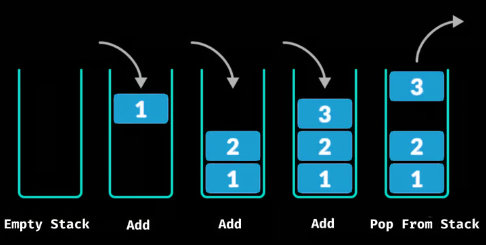
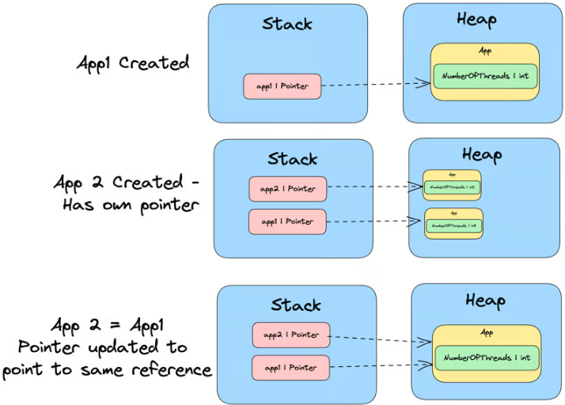
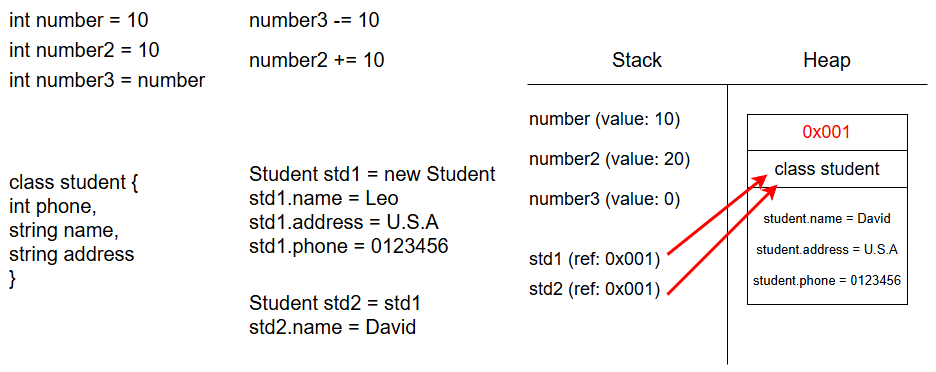

[C#] C# Stack & Heap
Contents
REF
底下大多數內容是翻譯該篇文章
基本重點
變數的存儲位置：
value type variable 通常存儲在 stack 中而 reference type variable 的 reference 存儲在 stack 中, 實際對象存儲在 heap 中
變數之間的指派：
當 value type variable 被指派給另一個 value type variable 時, 會進行 value 的複製
當 reference type variable 被指派給另一個 reference type variable 時, 會進行 reference 的複製
Stack 和 Heap 基本概念
-
Stack是在記憶體中用來追蹤所執行的 code, 是一種 LIFO 的 data structure- 儲存的類型為
value type
- 儲存的類型為
-
Heap是在記憶體中用來追蹤 objects 和 structures- 儲存的類型為
reference type
- 儲存的類型為
Variable type
在 C# 中 variable 的 type 有分為兩種 value type 和 reference type
Value type
-
bool
-
byte
-
char
-
decimal
-
double
-
enum
-
float
-
int
-
long
-
sbyte
-
short
-
struct
-
uint
-
ulong
-
ushort
Reference type
-
class
-
interface
-
delegate
-
object
-
string
Pointer
在 stack 和 heap 中還有一個東西稱作 pointer, 用來指向 reference type 的存放位址(address), pointer 會存放在 stack 中
|
|
-
Reference 存放在 stack 中
-
在這之中,
person作為local variable存放在 stack 之中 -
person存放了在 Heap 中Personobject 的 memory address
-
-
Object 存放在 Heap 中
-
new Person()在 Heap 中分配 memory 來存儲 Person object -
object 的 data(e.g
name) 也存放在 Heap 中
-
圖示
|
|
-
引用(Reference)：在 C# 中, 當我們 create 一個 object 時, 返回的 reference 存儲在 stack 中, 這個 reference 指向 Heap 中的 object
-
對象(object)：實際的 object data 存儲在 Heap 中, 這使得 object 可以在 function 之間傳遞並且在需要時動態地分配和釋放。
-
動態分配：當 create 一個新 object
Person person = new Person();, C# 會自動在 Heap 中分配一部份 memory 存放 object 的 attrubute -
動態釋放：在 C# 中當沒有任何的 reference 使用該 person 的 object, C# 的垃圾回收器（Garbage Collector）會自動釋放 memory, 在 C 和 C++ 中需要透過
free或delete手動釋放
-
Stack
Stack 是一個 LIFO 的機制, 用來存放 local variable, 當使用一個 method, 會建立一個 frame 並送入 stack 中, stack frame 包含 method’s parameters, return address, local variables 和其他相關資訊
在執行 method 的過程中, local variables 和 parameters 會存放在在 stack frame
當頂部的 method 執行完畢, 會將其 pop 掉, 並執行當前最頂部的 method

Heap
Heap 是用來存放所有 Reference type variable 的實際 data
Golden Rule
-
所有的 reference type 都會存放在 Heap -
所有的 value type 都會存放在 Stack, 除非在 declared 時使用 reference type 才會存放在 Heap (e.g. ref, out, in) -
Pointer, 用來指向 reference type data, 會存放在 stack -
Global variables會存放在 Heap讓所有的 code 皆可使用
Stack LIFO
Stack 在之前提過的部份, 是用來追蹤所有執行中或以執行過的 code
當 code 調用了一個 method, main thread 開始執行 instructions(指令), 這些 code instructions 存放在 method table 中.
但是 method 的 parameters 也會被送入 stack frame 中, method 內部的 variable 也會被送入 stack frame
Example 1
|
|
當調用了 Multiply method, method 的 parameter 就會被 push 到 stack 內(method 本身並不在 stack 上), 所以 stack 目前看起來像是
|
|
當 main thread 開始執行 code instructions, 會看到 result variable, 正如前面所說, local variable 會被 push 到 stack 中
|
|
method 執行完畢後會 return result variable, 並且將其從 stack frame 中 pop 出來
stack frame 上所有的 memory 都會被清理
在每次 method 內部 declared 的 value type variable 或者 parameter 都會存放在 stack
Example 2
|
|
可以很明確地從定義中得知 Application Class = Reference Type
由上往下解析 private int number = 0 是 Value Type 存放在 stack 中
app variable 是 Reference Type, app 作為 local variable(pointer) 存放在 stack, 而 new Application() 的 object data 存放在 Heap 之中
但是 class Application 中的 private int number = 42 存放在 stack 還是 heap 呢?
依然是存放在 heap, 因為他是 Reference Type 的 top level property
Example 3
以下一個稍微再複雜一點的舉例
|
|
那當調用 SomeMethod 這個 method 的時候, argument number 應該被存放到哪裡呢?
答案是 Stack, 雖然他是在 Reference Type 的內部, 但是它是 method 的 parameter, 所以是存放在 Stack
因為所有的 Value Type 的 method parameter 和 local variables 都會存放在 Stack
Importan Note
Example 4
當我們在使用 Reference Type 的時候, 我們的 variable 實際表示的是 pointer 並指向該 Reference Type 的 address, 並不是 actual value
簡單說, 當有兩個 variable 指向同一個 pointer, 它們會指向同一個 address, 如果修改其中一個 object, 另一個 variable 也會同時被更改
以下方舉例：
|
|
當我們 assign app1 給 app2, 他是透過 reference 的方式進行操作, 他在 stack 上添加了一個 pointer app2 同樣指向 app1 的 reference type address
因此, 當我們 update app2 的 NumberOfThreads value, 實際上我們是更新共用的 reference type 的 address, 因此 app1 的 NumberOfThreads value 也會被更新

C# 中值類型和引用類型的內存分配和變量傳遞機制
在 C# 中, value type 和 reference type 的內存分配和變量傳遞機制如下：

Value Type
- 值類型（如
int、double等）在堆疊（stack）中分配內存。 - 當將值類型變量傳遞給方法時，會傳遞該變量的副本。
Reference Type
- 引用類型（如
class、string等）在堆疊中分配引用（即地址），而實際對象存在於堆（heap）中。 - 當將引用類型變量傳遞給方法時，會傳遞該變量的引用。
代碼示例
以下是示例代碼及其內存分配情況的圖示：
|
|
內存分配圖示
|
|
-
value type 和 reference type：
-
int number = 10 等 variable 存在於堆疊（stack）中, 它們是 value type
-
Student std1 = new Student() 和 Student std2 = std1 是 reference type, std1 和 std2 都是指向 heap 中實際對象的引用
-
-
reference type variable的更改：
- 當 std2.name = “David” 被設置時, 由於 std2 和 std1 都引用相同的對象, 這個對象的 name 屬性會被更改
-
指標複製：
- 引用變量指向同一個堆內的實例, std1 和 std2 共享相同的內存地址（0x001）。